Секретарь аккредитационной комиссии Белорусского общества когнитивно-поведенческой терапии (БОКПТ), сертифицированный инструктор глубокой осознанности (Deeper Mindfulness), член клуба Минского центра КПТ, полноправный член Международного общества Схема-терапии (ISST), сертифицированный медиатор Министерства юстиций Республики Беларусь.
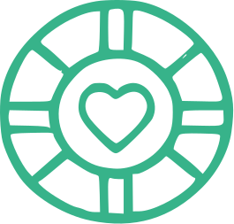
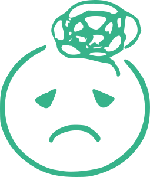
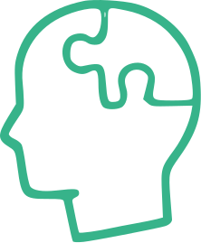
Диплом о высшем психологическом образовании
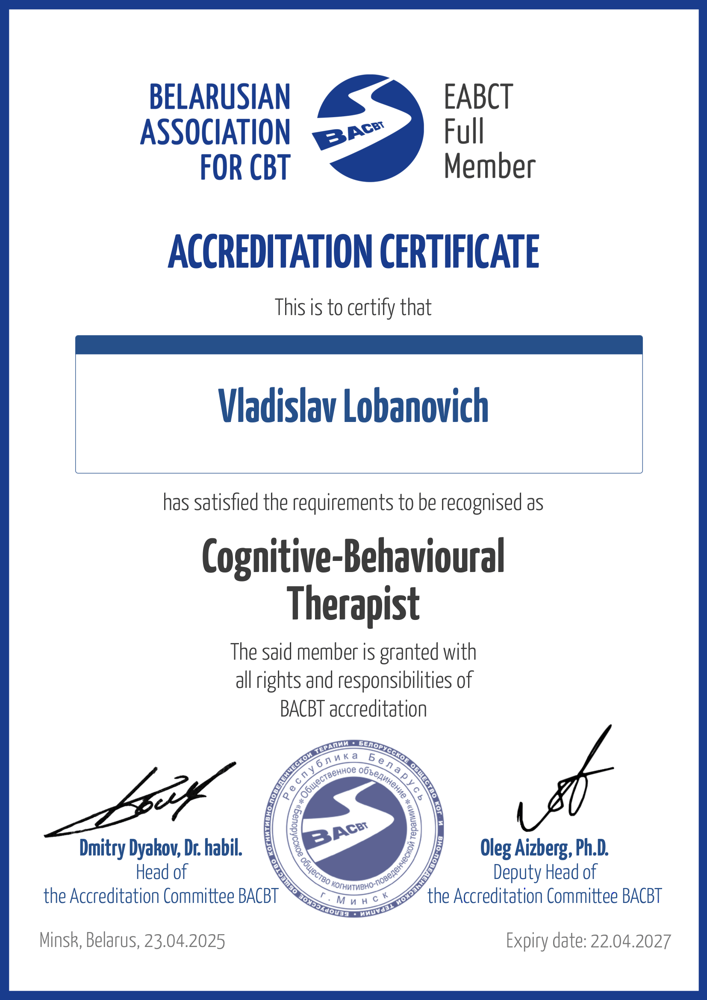
Сертификат об аккредитации как КПТ-терапевт
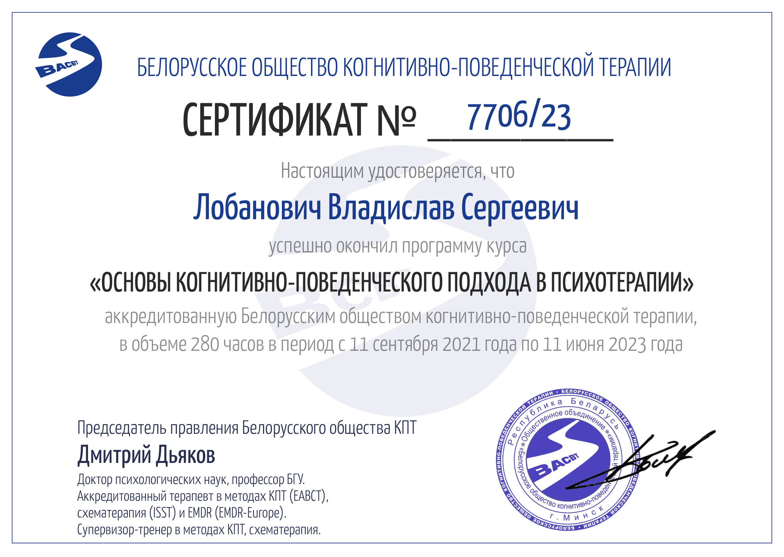
Базовая подготовка в методологии КПТ
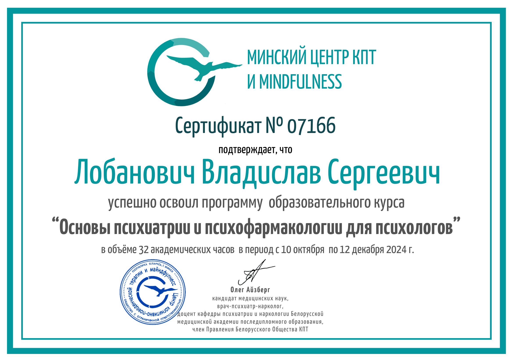
Основы психиатрии и фармакологии для психологов
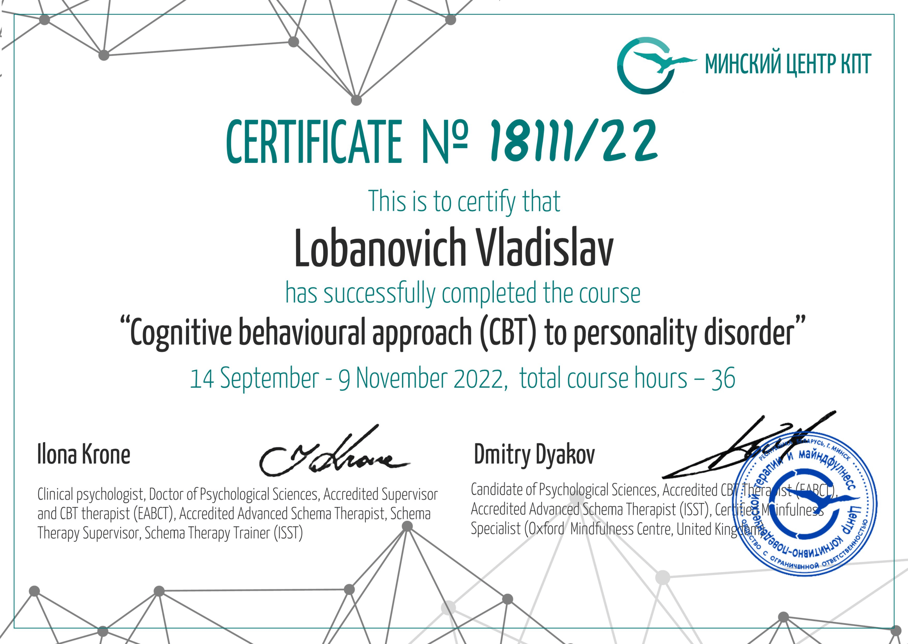
КПТ в работе с расстройствами личности
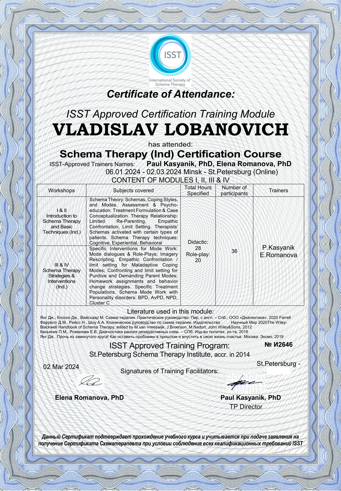
Базовая подготовка в области индивидуальной Схема-терапии
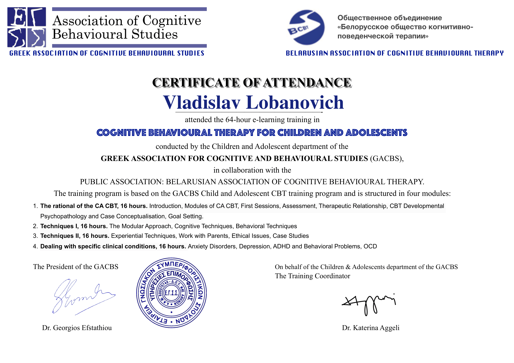
КПТ для детей и подростков
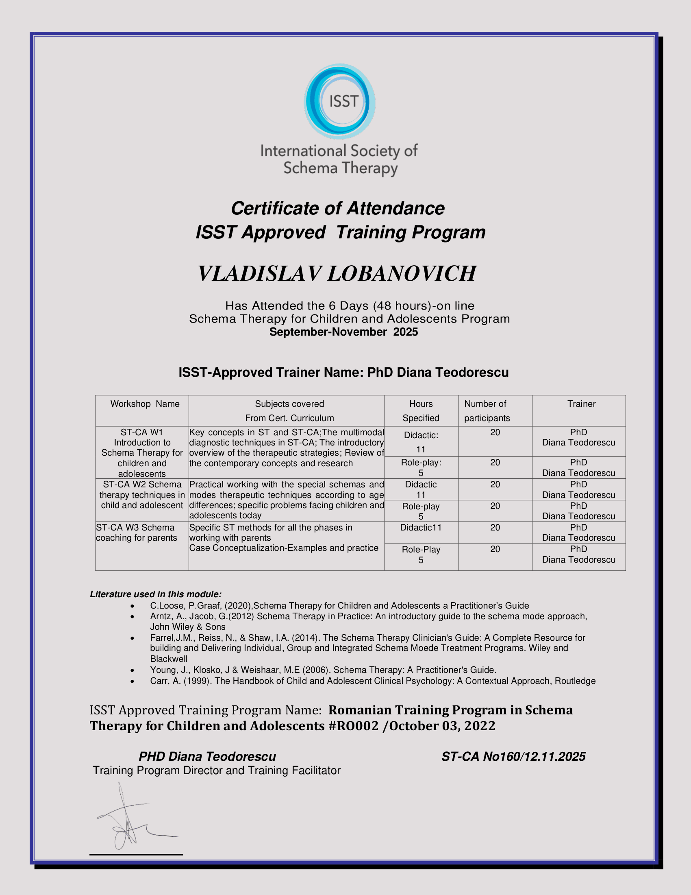
Базовая подготовка в области детской Схема-терапии

Подготовка в сфере работы с посттравматическим стрессовым расстройством
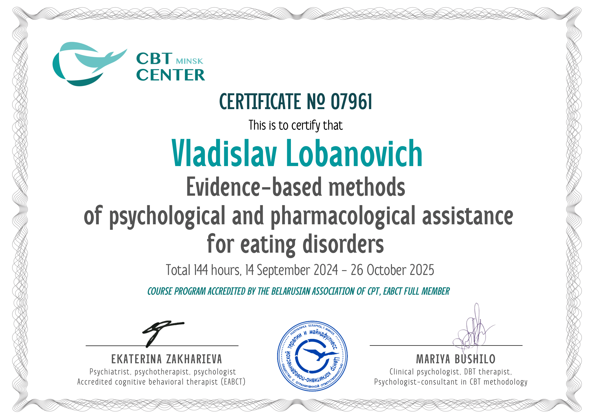
Подготовка в сфере работы с расстройством пищевого поведения
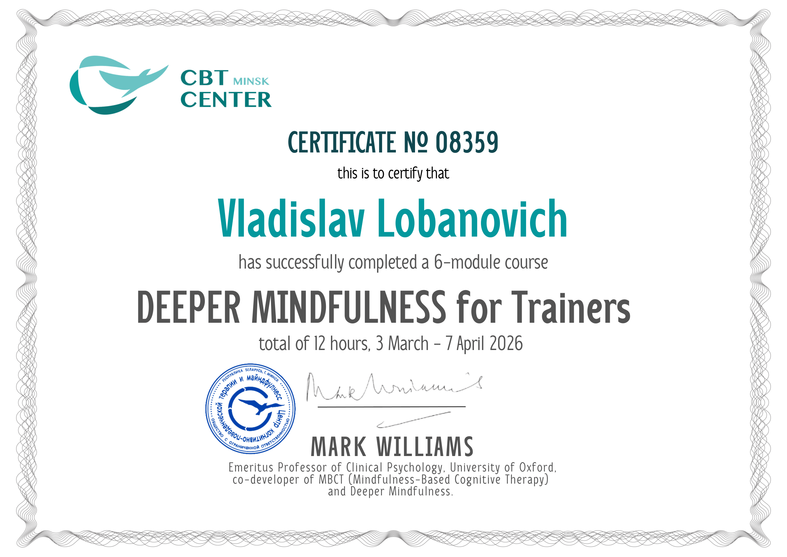
Сертификат инструктора глубокой осознанности
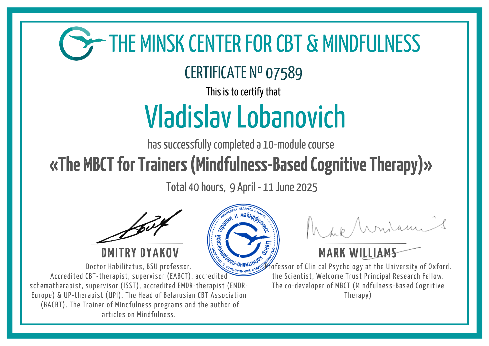
Сертификат тренера Mindfulness-Based Cognitive Therapy (MBCT)
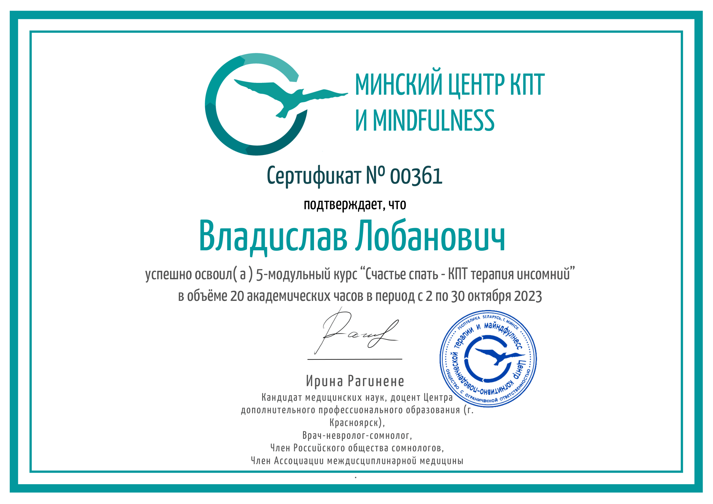
Подготовка в сфере работы с проблемами сна
Очно или онлайн (Google Meet). Периодичность сессий обсуждается индивидуально, чаще всего — 1 раз в неделю.
Средняя продолжительность встречи — 50 минут (45–55 минут). В отдельных случаях сессия может длиться до 90 минут.
Гарантирую полную конфиденциальность и соблюдение профессиональной этики.
Психологическое консультирование, психологическая коррекция, психологическая профилактика и психологическое просвещение
за одну сессию
Участие в международном исследовании по внедрению новой модели схем и режимов, предложенных Арно Арнцем и его коллегами, а также апробации новых опросников на основе данной модели.
Статья опубликована в научном журнале PLoS One.
"A next generation of the schema therapy model of personality pathology: A cross-cultural and international study protocol"Читать статью